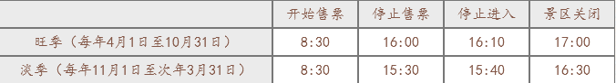

1、门票提前10天预售，售完为止
2、故宫购票实行实名制，所有观众需要录入身份证或护照信息方可预定。
3、每个证件（身份证/护照）每个人院日限购一张门票
4、如有发票需求，请在订单中填写发票抬头内容后，持相关证件到检票口东侧的“综合服务窗口”领取。
1、退改签：预售门票在未使用的情况下，可于预约参观日当天下午20点前在本平台申请退款或改签，超过时限度则无法退款或
改签。改签只可选择日期，不可选择上下午。
2、退款会在您预约入院日之后的5日内执行，如果您届时尚未收到退款，请致电客服咨询。
1、下单时填写了二代身份证号的观众可在入院日当日持身份证或户口本原件在任意检票口直接入院，无需兑换纸质门票。
2、下单时填写了港澳台身份证或护照的观众可在入院日当日持港澳台身份证或护照原件在任意检票口直接入院，无需兑换纸质门票。
3、参观当天，因证件丢失、损坏或其他情况导致无法验票的观众，可凭其他有效证件（户口本、驾驶证等标有证件号的证件）在任意检票口直接入院，无需兑换纸质门票。
4、多人订单在验票时，任意一人验票成功后，任意一人验票成功后，订单内所有观众均视为已验票（已验票则无法申请退款），但其他人仍须出示证件进行二次验票
除法定假日，故宫博物院全年实行周一闭馆
注：以上时间规定均包含大门、珍宝馆和钟表馆。
午门（南门）：只作为参观人口，观众一律从午门进入故宫；
神武门（北门）：只作为参观出口；
东华门（东门）：只作为参观出口；
1.门栗价格:
(1)每年4月1日至10月31日为旺季，大门票60元/人:
(2)每年11月1日 至次年3月31日为淡季，大门票40元/人。
(3) 珍宝馆(即进入宁寿宫区，还包括戏曲馆、石鼓馆)参观门票: 10元/人，
(4)钟表馆(印进入奉光殿区)参观门票: 10元/人。
2.主开放区优惠政策(不含珍宝馆、钟表馆) :
(1)大、中、小学生(含港、澳、台学生,不含成人教育、研究生)，先学生证或学校介绍信，可购学生票，20元/人。
(2) 6周岁(不含6周岁)至18周岁(含18周岁)来成年人，可凭身份证、户口本或护照购买学生票，20元/人。
(3) 60岁以上(含60岁)老年人凭身份证原件，门票半价优惠。
(4)持有本市社会保障金领取证的人员，门票半价优惠。
(5)离休干部凭离休证，免票参观。
(6) 6周岁(含6周岁)以下或身高1.2米(含1.2米)以下儿童免票参观。
(7) 残疾人凭残疾人证件，免票参观。
(8) “三八”妇女节，妇女享受门票半价优惠。
（9)“六一”儿童节，14周岁以下儿童(含14周岁)，免费参观。随同家长一人享受半价优惠。
(10) “八一”建军节，现役军人、武警(含消防牧援人员)凭有效证件，免费誊观。
3.内馆优惠政策(珍宝馆、钟表馆) :
(1)大、中、小学生(含港、澳、台学生，不含成人教育、研究生)，凭学生证或学校介绍信，可购学生票，5元/人。
(2) 6周岁(不含6周岁)至18周岁(含18周岁) 未成年人，可凭身份证、户口本或护照购买学生票，5元/人。
(3) 60岁以上(含60岁)老年人凭身份证原件，门票半价优惠，5元/人。
(4) 持有本市社会保障金领取证的人员，门票半价优惠,5元/人。
(5) 离休干部凭离休证，免票参观。
(6) 6周岁(含6周岁)以下或身高1.2米(含1.2米)以下儿童免票参观。
(7) 残疾人凭残疾人证件，免票参观。
(8) “三八”妇女节，妇女享受门票半价优惠，5元/人。
(9) “六一”儿童节，14周岁以下儿童(含14周岁)，免票参观。随同家长一人享受半价优惠，5元/人。
(10) “八一”建军节，现役军人、武警(含消防牧援人员)凭有效证件，免费誊观。
旺季（每年4月1日至10月31日）8:30-16:15
淡季（每年11月1日至次年3月31日）8:30-15:45
注：除法定节日，故宫博物院全年实行周一闭馆，闭馆期间不提供服务。
故宫博物院欢迎您!
北京故宫(旧称紫禁城)一-明、 清两代皇宫的遗址。
1987年，被联合国教科文组织列入“世界文化遗产”名录。
故宫博物院全院禁止吸烟。您在故宫博物院内参观游览时请勿吸烟，并提醒他人不要吸烟!
故宫是世界上现存最大的木结构宫殿建筑群，历史上曾经多次发生火灾。每个点燃的烟头都可能是对这片珍贵历史文化遗产的威胁。
尊重文化遗产，保护文物古迹。
请不要在古建筑和古树上留下您的大名，刻画涂写不仅不会使您英名永驻，反而遭到大家的部视。
做文明观众。
为不妨碍、影响他人参观，按照国际惯例在展厅请勿使用闪光灯和三脚架拍照。
在我院与其他博物馆合作举办的展览以及特色商品店，固有版权协议，不允许观众拍照展品，请注意警示标志，服从展厅工作人员的管理。
文明环境靠大家共同营造!
请勿携带宠物进院参观。
请尽量不妨碍其他观众。
请保持衣容整洁。
不要做出有碍观瞻、有损形象的行为。
为了您和他人的健康，请勿随地吐痰。
请勿乱丢垃圾废物，尊重清洁工人的劳动。
让我们共同保持参观环境的清洁有序!
欢迎利用我院提供的各种导览帮助设施!
故宫博物院官方网站ww. dpm. org. cn
故宫博物院是公共开放场所，为确保您的人身安全，如遇人群密集时，请听从工作人员的疏导，有序参观，不要拥挤。
在开放时间即将结束时，请注意广播和工作人员的提示，尽快结束参观。
感谢您配合我们保护故宫安全的清场工作!
在您参观时请留意自己携带的物品，提防扒窃。
请不要轻信和接受社会散杂人员派发的各种广告和完售的商品。严防上当受骗，并欢迎举报。
故宫派出所电话: 010- 85007495
如果您在参观中遇到急难情况，请不要惊慌，就近寻求我院工作人员的帮助。
如果您与亲友在参观中走失，可到景运门内西南侧的广播宝通知他们。
祝您参观愉快!
停靠的车辆:
1、2、10、82、120、37、52、59、126、90、99、203、205、210、728路、专1路、专2路公共汽车和1号地铁线
午门周边的公共交通车站:天安门西.
停靠的车辆: 1、5、10、22、52、205、90、99、728路、专1路、专2路公共汽车和1号地铁饭
神武门(故宫博物院的北门，自2011年7月2日始只作为观众参观出口) :与景山公园隔街相对
神文门周边的公共交通车站:故宫
停靠的车辆: 101、103、109、124路无轨电车和202、211、685、609路、 专1路、专2路公共汽车
神式门周边的公共交通车站:景山东门
停靠的车辆: 111路无轨电车
东华门(故宫博物院的东门，现作为观众参观出口) :从王府井商业街沿东安门大街西行800米可以到达。
东华门周边的公共交通车站:东华门
停靠的车辆: 2、82、210路、专1路、专2路公共汽车
西华门(故宫博物院的西门，平时仅做工作人员通道) :从长安街沿南长街北行600米或从北海公园沿北长街南行600米可以到达。
西华门周边的公共交通车站:西华门
停靠的车辆: 5路、专1路、专2路公共汽车
请注意:
故宫博物院没有专用停车场，最近的公共停车场在东华门外、景山后街与北海南门，丰位有限。
建议观众朋友们搭乘公共交通车辆来故宫博物院参观。